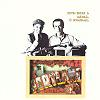

Celtic Lyrics Corner > Artists & Groups > Domhnaill Family > Portland > Aird Uí Chumhaing
|  | Aird Uí Chumhaing |
| Credits : | n/a |
| Appears On : | Portland |
| Language : | Gaeilge (Irish Gaelic) |
| Other Versions : |
"
Aird A Chuamhaing
" on Anam's album
Riptide
" Ardaigh Cuan " on Anúna's album Omnis " The Land Of Erin " on Katie McMahon's album After The Morning " River Of Life " on Trísan's album Trísan |
| Lyrics : | English Translation : |
| Dá mbeinn féin in Aird Uí Chumhaing | If I were in Aird Uí Chumhaing |
| In aice an tsléibhe 'tá i bhfad uaim | Beside that distant mountain |
| Ba annamh liom gan dul ar cuairt | There's seldom a Sunday |
| Go gleann na gcuach dé Domhnaigh | That I wouldn't visit the cuckoo's glen |
| Curfá : | Chorus (after each verse) : |
| Agus och och Eire lig is ó | Agus och och Eire lig is ó |
| Eire líonndubh agus ó | Eire líonndubh agus ó |
| 'Sé mo chroí tá trom agus bronach | My heart is heavy and sad |
| Is iomai Nollag a bhí mé féin | Many's the Christmas |
| I mBun Abhainn Doine is mé gan chéill | I spent in Cushendun |
| Ag iomainn ar a trá bán | Playing hurley on the strand |
| 'S mo chaman bán ins mo dhorn liom | My white caman in my fist |
| Dá mbeadh agam coite 's rámh | If I had a boat and oars |
| D'iomairfinn liom ar dhroim a' tsnáimh | I'd row over the crest of the tide |
| 'S mé 'dúil as Dia go sroichfinn slán | Trusting to God that I'd arrive safe |
| 'S go bhfaighinn bás in éirinn | And that I'd die in Ireland |